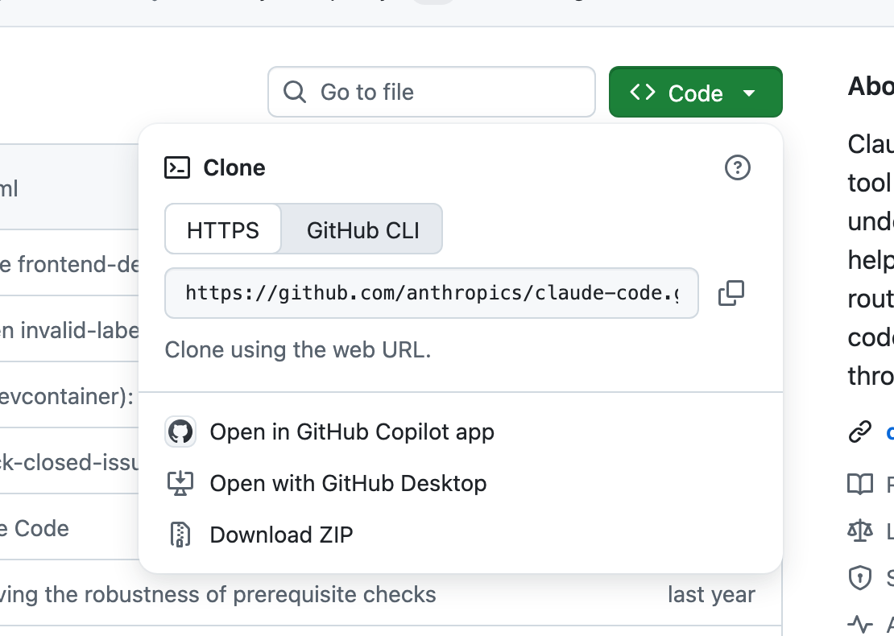
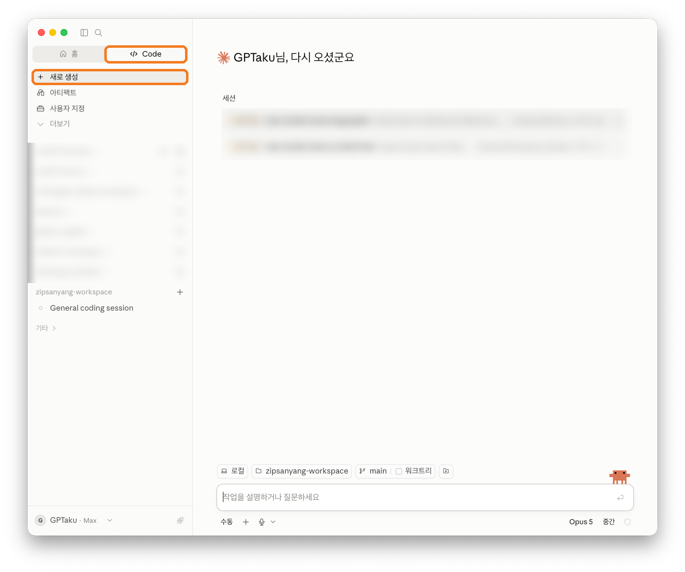
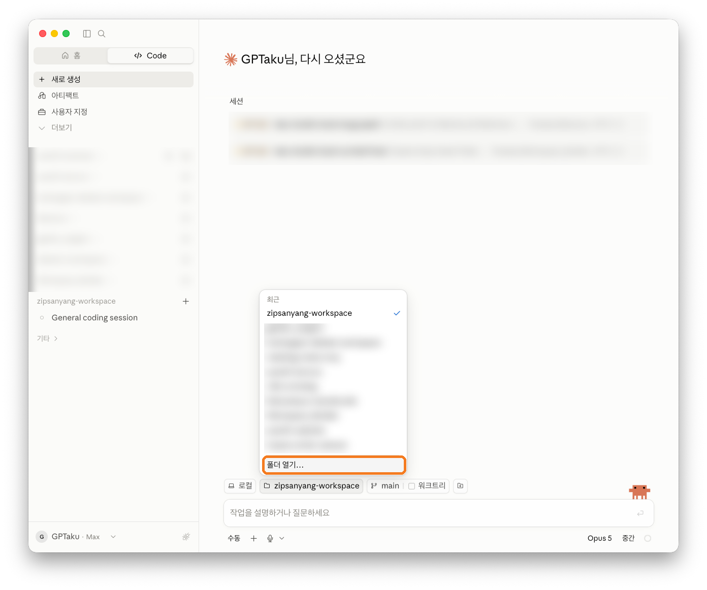
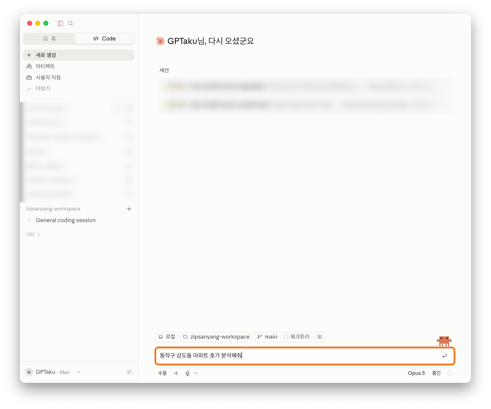
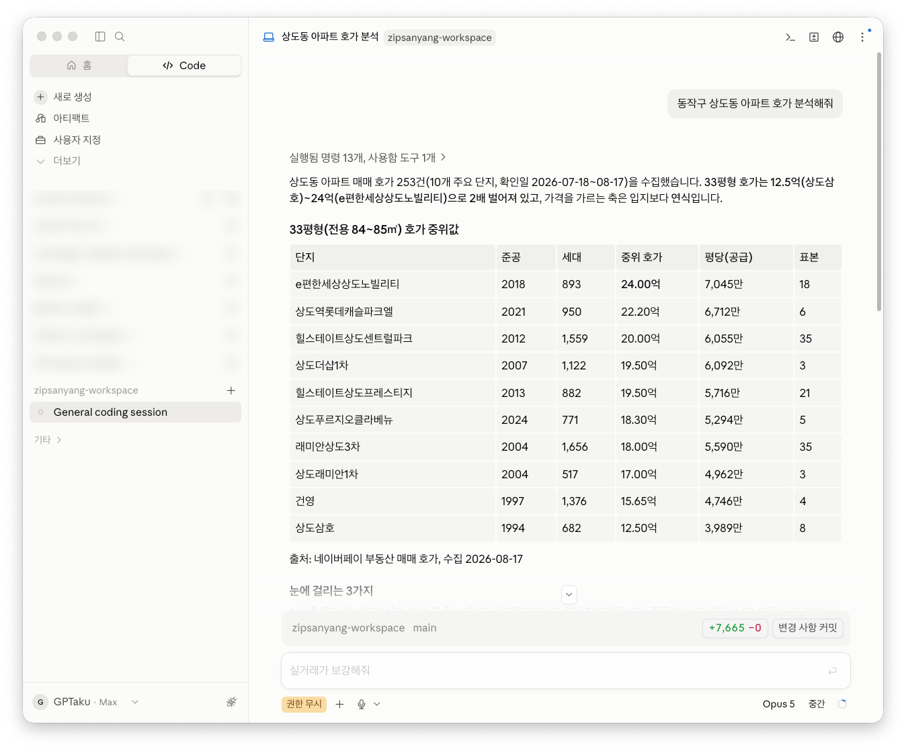

결제가 확인되면, 구매 시 적어주신 GitHub 아이디로 비공개 저장소 초대가 갑니다. 여기서 파일을 내려받는 방법입니다.
B1
초대 수락
GitHub 가입 메일함에 "invited you to collaborate" 메일이 와 있습니다. 메일 속 View invitation → Accept invitation을 누릅니다. (메일이 없으면 github.com 로그인 후 알림 종 아이콘을 확인하세요.)
B2
저장소 페이지에서 ZIP 내려받기
초대 수락 후 열리는 저장소 페이지에서 초록색 <> Code 버튼 → Download ZIP을 누릅니다. 이게 전부입니다 — git 명령어는 몰라도 됩니다.

실제 GitHub 화면 (2026-08 캡처) — 초록 Code 버튼을 누르면 이 메뉴가 열리고, 맨 아래가 Download ZIP입니다
B3
압축 풀고, 기억하기 쉬운 곳에 두기
내려받은 ZIP을 더블클릭해 풀면 폴더 하나가 나옵니다. 바탕화면이나 문서 폴더처럼 기억하기 쉬운 위치로 옮겨두세요. 폴더 이름은 바꿔도 됩니다.
나중에 git이 익숙해지면 git clone으로 받는 게 업데이트에 편하지만, 처음엔 ZIP이면 충분합니다. 방법은 가이드북 1챕터에도 있습니다.
C. 폴더 열고 첫 질문
C1
Code 탭 → 새로 생성
앱 상단의 Code 탭을 누르고, 사이드바 맨 위 새로 생성을 클릭합니다. (앱은 채팅·Cowork·Code 3개 탭으로 되어 있고, 내 컴퓨터의 폴더를 직접 다루는 건 Code 탭입니다 — 공식 문서 기준.)

실제 앱 화면 (2026-08 캡처) — 주황 표시: 상단 Code 탭, 사이드바의 새로 생성
C2
입력창 위에서 폴더 선택 — 깃허브에서 받은 그 폴더
입력창 바로 위의 폴더 버튼을 누르면 목록이 열립니다. 맨 아래 폴더 열기…를 눌러 B단계에서 압축 푼 집사냥 폴더를 선택하세요. 입력창 위에 폴더 이름이 표시되면 연결 완료 — 그 순간부터 에이전트가 폴더 안의 설정(분석 규칙·계산기·5인 검증 체계)을 읽고 부동산 전문 모드로 동작합니다.

실제 앱 화면 — 주황 표시 "폴더 열기…"로 내려받은 폴더를 선택합니다
C3
한국어로 질문
입력창에 그대로 치면 됩니다 — 명령어가 아니라 문장입니다.

실제 입력 화면 — "동작구 상도동 아파트 호가 분석해줘"라고 친 상태. Enter를 누르면 분석이 시작됩니다
명령어 암기, 코드 작성 — 전부 필요 없습니다. 질문하면 에이전트가 데이터를 수집하고 계산해서, 표와 리포트로 답합니다. 결과 보고서는 브라우저로 열리는 보기 좋은 페이지(HTML)로도 저장됩니다.
D. 무료 데이터 키 등록
실거래가 데이터는 정부 공공데이터포털(data.go.kr)에서 무료로 받습니다. 회원가입 → 활용신청 → 발급된 키를 파일에 붙여넣기까지, 화면 순서대로 찍은 안내가 가이드북 1챕터에 들어 있습니다. 처음 해도 5분쯤 걸립니다. 여기까지 하면 세팅 끝 — 이후로는 질문만 합니다.
막히면 온보딩 기간 중에는 제가 직접 봐드립니다. 1차 구매자 5명 한정으로 운영하는 이유가 이것입니다.
E. 세팅이 끝나면 이렇게 씁니다 — 실제 세션 기록
아래 두 사례는 이 페이지를 만들며 실제로 세션을 돌려 받은 답변입니다(2026-08-16 실행, 지면에 맞게 표만 재구성). 여러분이 받게 될 산출물의 실물이라고 보시면 됩니다.
사례 1 — "얼마까지 살 수 있어?"
가상 프로필(현금 2억·연소득 7,000만·무주택·만기 40년)을 주고 물었습니다.
> 현금 2억, 연소득 7천만, 무주택이야. 얼마까지 살 수 있어?
① 매수력 계산 결과 (기준일 2026-08 규제)
규제지역 3.33억 (제약: LTV 40%)
비규제 수도권 5.55억 (제약: DSR — 스트레스 가산 반영)
비규제 그 외 6.67억 (제약: LTV 70%)
정책대출(신생아·보금자리 등) 미적용 — 가구 속성 확인 시 상한 확대 가능
눈여겨볼 것: 그냥 숫자만 주는 게 아니라 어떤 규제에 걸렸는지, 정책대출로 더 늘 수 있는지까지 스스로 밝힙니다.
사례 2 — "이 동네 요즘 어때?"
지역 하나를 지정해 12개월 진단을 시켰습니다. 에이전트가 국토부 실거래 API에서 매매 808건·전세 611건을 직접 수집해 계산했습니다.
> 군포 84 기준으로 최근 12개월 어땠어?
군포시 84㎡ 12개월 진단 (표본: 매매 808건·전세 611건)
가격 추세 연 -1.67% — 완만한 조정
전고점 회복 91.7%
거래량 최근 3개월이 이전 평균의 1.19배
전세가율 실측 78.3% — 가정값 대신 실거래로 계산
눈여겨볼 것: 전세가율을 "보통 60%"로 가정하지 않고 실거래에서 실측합니다. 이 차이 하나가 갭 예산 계산을 수억 원 바꿉니다.
사례 3 — 데스크톱 앱에서 실제로 돌아가는 모습
위 C단계 질문("동작구 상도동 아파트 호가 분석해줘")의 실제 결과 화면입니다. 명령 13개가 자동 실행되어 호가 253건을 수집하고, 10개 단지의 중위 호가 표와 출처·수집일까지 정리해 줍니다.

실제 결과 화면 (2026-08 캡처) — 검은 터미널 없이, 앱 안에서 표로 받아봅니다
이런 질문이 총 12종류쯤 됩니다 — 단지 진단, 옆 단지 비교, 세금 3안 비교, 계약서 점검, 청약 진단, 산 뒤의 기록·회고까지. 전부 판매 페이지의 카드에서 실물 형식을 볼 수 있습니다.
자주 묻는 걱정
코딩을 진짜 하나도 몰라도 되나요?
됩니다. 여러분이 입력하는 건 "이 동네 어때?" 같은 한국어 문장뿐입니다. 계산은 내장 스크립트가 하고, 그걸 실행하는 것도 에이전트입니다.
터미널(검은 화면)을 꼭 써야 하나요?
아니요. 데스크톱 앱으로 동일하게 동작합니다. 판매 페이지의 검은 화면은 같은 대화를 개발자용 화면에서 한 것뿐입니다.
맥이어야 하나요?
맥·윈도우 모두 됩니다. PC는 필요합니다 — 휴대폰 단독으로는 안 됩니다.
비용은 뭐가 드나요?
본 상품(1회) + Claude 구독(월, Anthropic 별도 결제). 데이터 API 키는 무료입니다.
GitHub 계정이 없는데요?
github.com에서 무료로 만들 수 있습니다(이메일만 있으면 2분). 다만 계정 생성·ZIP 다운로드 과정 자체가 부담스러우면 아래 항목을 읽어주세요.
그래도 못 따라가면요?
정직하게: 프로그램 설치와 폴더 다루기 자체가 처음이면 권하지 않습니다. 결제 전에 이 페이지의 A~D를 읽고 "할 수 있겠다" 싶은 분만 구매하시길 바랍니다. 발송 후에는 환불이 불가합니다.
구매 전 확인 — 본 상품은 분석 도구·방법론이며 투자자문이 아닙니다. 수익을 보장하지 않고, 투자 판단과 책임은 본인에게 있습니다. 세무·법률 산출물은 전문가 확인을 권합니다.